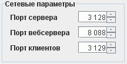
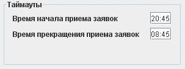

Параметры сети и таймауты.
На этой закладке устанавливается порт сервера, порт вебсервера, порт клиентов, время начала приема заявок на пункт регистрации и время окончания приема заявок на пункт регистрации.

Порт сервера, порт вебсервера и порт клиентов устанавливается в группе "Сетевые параметры". Параметр "порт сервера" отвечает за номер порта, на котором будет работать данный сервер системы. Параметр "порт вебсервера" отвечает за номер порта, на котором будет работать вебсервер отчетов. Параметр "порт клинтов" исползуется для взаимодействия с другими модулями системы такими как пункт регистрауии и рабочее место пользователя.
Время начала и окончания приема заявок устанавливается в формате чч:мм в группе "Таймауты".

При наступлении времени прекращения приема заявок на пункт регистрации будет послано команда о блокировании. При наступлении времени начала приема заявок на пункт регистрации будет послана команда о разблокировании. Администратор может снять блокировку с пункта регистрации или наоборот заблокировать в любое время. Блокировка влияет только на пункт регистрации,сервер системы будет работать в прежним режиме.
Если эти времена совпадают, то система работает круглосуточно без остановки.